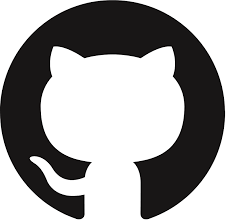
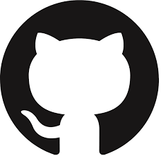

Originally formed as a four-piece hardcore punk band, the Young Aborigines, in 1978 by Diamond (vocals), John Berry (guitar), Yauch (bass) and Kate Schellenbach (drums), the band appeared on the compilation cassette New York Thrash, contributing two songs from their first EP, Polly Wog Stew, in 1982. Berry left shortly thereafter, and was replaced by Horovitz. After achieving moderate local success with the 1983 experimental hip hop 12-inch single "Cooky Puss", Schellenbach dropped out and the Beastie Boys made a full transition to hip hop, releasing a string of successful singles. They toured with Madonna in 1985 and a year later released their debut album Licensed to Ill. The Beastie Boys have sold 26 million records in the United States and 50 million records worldwide, making them, according to Billboard, the biggest-selling rap group since the magazine began recording sales data in 1991.[2]
Ian Nowicki
Connect with me

 
